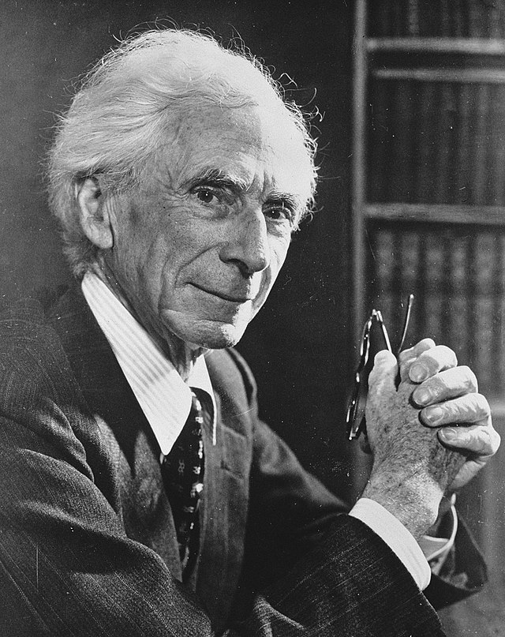

“La guerra non decide chi ha ragione, ma solo chi rimane.”
Bertrand Russell nacque in Inghilterra nel 1872 e morì nel 1970, è
stato un grande filosofo e matematico britannico, fu un grande pacifista
e attivista antinucleare del novecento.
Si oppose alla guerra
promuovendo l'abbandono delle armi e sostenendo la pace:
durante la Prima Guerra Mondiale fu imprigionato per le sue attività pacifiste.
Bertrand Russel era convinto che la guerra non puo' essere uno strumento per la
giustizia, e risulta solo uno dei modi per esercitare la propria forza, causando
morte e distruzione.
